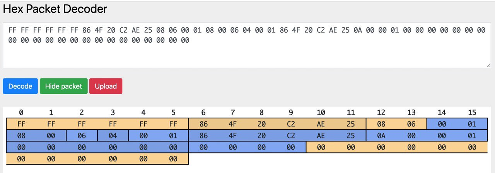
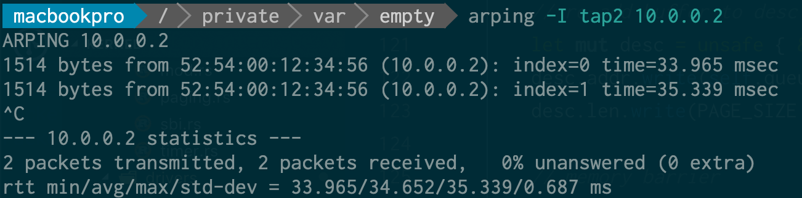
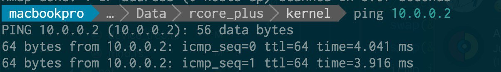
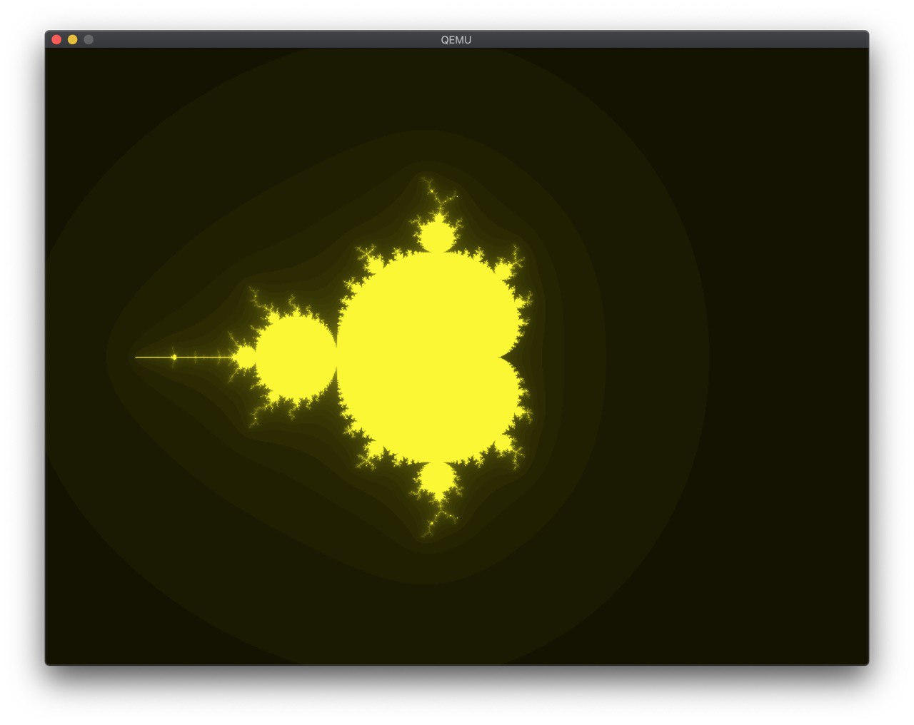
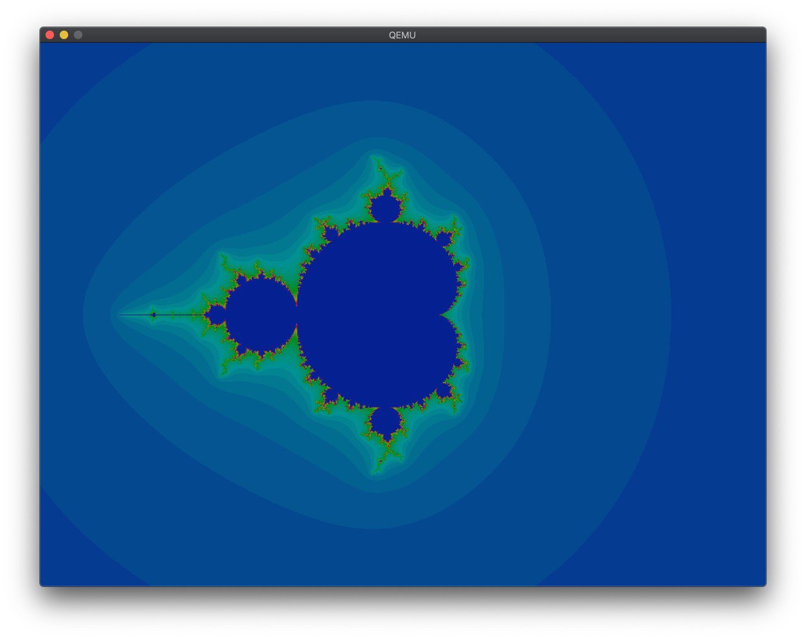
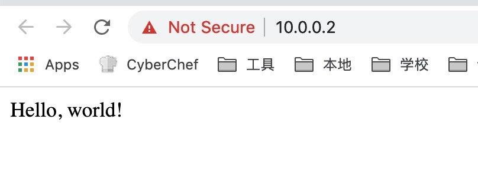

使用 Rust 实现 VirtIO 驱动¶
背景¶
最近在给 rCore 添加驱动层的支持。一开始是想做网卡驱动，后来发现， qemu-system-riscv32 只支持如下的驱动：
# qemu-system-riscv32 -device help
Storage devices:
name "scsi-cd", bus SCSI, desc "virtual SCSI CD-ROM"
name "scsi-disk", bus SCSI, desc "virtual SCSI disk or CD-ROM (legacy)"
name "scsi-hd", bus SCSI, desc "virtual SCSI disk"
name "virtio-blk-device", bus virtio-bus
name "virtio-scsi-device", bus virtio-bus
Network devices:
name "virtio-net-device", bus virtio-bus
Input devices:
name "virtconsole", bus virtio-serial-bus
name "virtio-keyboard-device", bus virtio-bus
name "virtio-mouse-device", bus virtio-bus
name "virtio-serial-device", bus virtio-bus
name "virtio-tablet-device", bus virtio-bus
name "virtserialport", bus virtio-serial-bus
Display devices:
name "virtio-gpu-device", bus virtio-bus
Misc devices:
name "loader", desc "Generic Loader"
name "virtio-balloon-device", bus virtio-bus
name "virtio-crypto-device", bus virtio-bus
name "virtio-rng-device", bus virtio-bus
所以要实现网卡的话，只能实现这里的 virtio-net-device ，而 VirtIO 驱动之间有很多共通的地方，于是顺带把 gpu mouse 和 blk 实现了。
第一个驱动 virtio-net 的实现¶
首先想到并且实现了的是网卡驱动， virtio-net 。最开始的时候，为了简单，只开了一块缓冲区，每次同时只收/发一个包。首先拿了 device_tree-rs 读取 bbl 传过来的 dtb 地址，找到各个 virtio_mmio 总线以后按照设备类型找到对应的设备。然后就是对着 virtio 的标准死磕，同时看 Linux 和 QEMU 的源代码辅助理解，最后终于是成功地把收/发的两个 virtqueue 配置好，并且在中断的时候处理收到的包。这个时候，可以成功地输出收到的包的内容，并且发出指定内容的包了。效果就是看到了这样的图片（图中网站是 Hex Packet Decoder）：

基于此，写了一个简单的以太网帧的解析，ARP 的回复和 ping 的回复（直接修改 ECHO_REQUEST 为 ECHO_REPLY 然后更新 CHECKSUM），实现了最基本的 ping：


显卡驱动¶
网卡可以用了，很自然地会想到做一些其他的 virtio 驱动，第一个下手的是显卡。显卡和网卡的主要区别是，网卡是两个 queue 异步作，而在显卡驱动上则是在一个 queue 上每次放一输入一输出的缓冲区来进行交互，具体步骤在 virtio 标准中也写得很清楚。在这个过程中，QEMU 的 Tracing 功能帮了很大的忙，在调试 desc 的结构上提供了很多帮助。
然后就在 framebuffer 上画了一个 mandelbrot：

在 @shankerwangmiao 的建议下，调了一下颜色：

这样就好看多了。
HTTP 服务器¶
在 @wangrunji0408 的提醒和建议下，我开始把一个 Rust 实现的网络栈 smoltcp 集成到代码中来。这个库中，对底层 Interface 的要求如下：
- 当可以发包并且可以收包的时候，返回一收一发两个 Token，并在使用的时候调用指定的函数。
- 当可以发包的时候，返回一个发的 Token，含义同上。
这是我第一次看到这种抽象，而且也没有特别明确的文档表示，这个 Token 代表什么，我应该提供什么。我直接按照一些已有的例子，照着实现了一把。过程中遇到了 ownership 的问题，通过 Arc 和 Mutex 解决了，然后又出现了死锁的问题，调了半天才调出来。
接着按照 somltcp 的样例写一个简单的 udp echo server 和（假的）tcp 服务器：
// simple http server
let mut socket = sockets.get::<TcpSocket>(tcp_handle);
if !socket.is_open() {
socket.listen(80).unwrap();
}
if socket.can_send() {
write!(socket, "HTTP/1.1 200 OK\r\nServer: rCore\r\nContent-Length: 13\r\nContent-Type: text/html\r\nConnection: Closed\r\n\r\nHello, world!\r\n").unwrap();
socket.close();
}
虽然很粗暴，但是 work 了：

鼠标驱动和块设备驱动¶
接着自然是往 QEMU 支持的剩下的 virtio 设备里下手。首先下手的是鼠标驱动。这次遇到了新的问题：
- 由于缓冲的存在，每次只有在 EV_SYN 的时候才会一次性把若干个事件放入队列中。
- 一个事件就要一个 desc chain，意味着直接串足够大小的 buffer 到同一个 desc chain 中并不能工作。
于是只好痛定思痛照着 Linux 内核的实现把完整的 Virtqueue 的操作实现了，并且顺带把前面的网卡和显卡的驱动也更新了。果然，每次都是三个左右的事件（X，Y，SYN）插入，然后根据这些事件就可以计算出当前的鼠标位置了。
至于块设备，遇到的则是别的坑。看标准的时候，本以为就一个结构体 virtio_blk_req 就搞完了，但仔细读了读，标准似乎没讲清楚，读的时候是怎么传，写的时候又是怎么传。于是在这里卡了很久，从 Tracing 信息可以看出，QEMU 一直认为我提供的 buffer 大小不正确，多次实验之后发现，给 device 写入的 buffer 大小为 block size 的整数倍加一，这个一存放的是状态，其他则是数据，真的太坑了。
有了块设备以后，就可以替换掉原来的内嵌 SFS 的方案，转为直接从块设备读 SFS 文件。这里我没想明白 lazy_static 和 ownership 的一些问题，最后也则是@wangrunji0408 的帮助我解决了。
总结¶
用 Rust 写出一个可以工作的驱动并不难，只要知道 unsafe 怎么用，但是一旦需要深入思考这里应该用什么安全的方法封装的时候，才发现是个很困难的事情。现在虽然工作了，但是很多地方线程并不安全，代码也不够简洁高效，以后还有很多需要改进的地方。